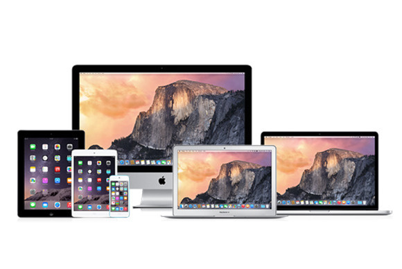
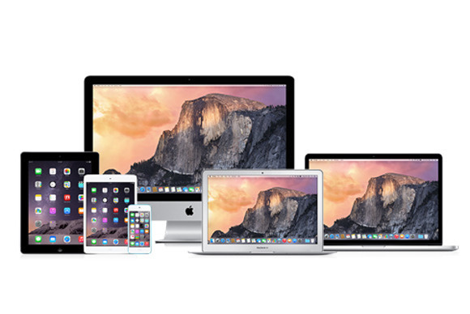

At the Macworld Conference & Expo in January 2007, Steve Jobs introduced the long-anticipated iPhone, a convergence of an Internet-enabled smartphone and iPod. The first-generation iPhone was released on June 29, 2007, for $499 (4 GB) and $599 (8 GB) with an AT&T contract. On February 5, 2008, it was updated to have 16 GB of memory, in addition to the 8 GB and 4 GB models. It combined a 2.5G quad band GSM and EDGE cellular phone with features found in handheld devices, running a scaled-down version of OS X (dubbed iPhone OS after the launch and later renamed to iOS), with various Mac OS X applications such as Safari and Mail. It also includes web-based and Dashboard apps such as Google Maps and Weather. The iPhone features a 3.5-inch (89 mm) touchscreen display, Bluetooth, and Wi-Fi.
On January 27, 2010, Apple introduced their much-anticipated media tablet, the iPad. It offers multi-touch interaction with multimedia formats including newspapers, e-books, photos, videos, music, word processing documents, video games, and most existing iPhone apps using a 9.7-inch screen. It also includes a mobile version of Safari for web browsing, as well as access to the App Store, iTunes Library, iBookstore, Contacts, and Notes. Content is downloadable via Wi-Fi and optional 3G service or synced through the user's computer. AT&T was initially the sole U.S. provider of 3G wireless access for the iPad.
On October 23, 2001, Apple introduced the iPod digital music player. Several updated models have since been introduced, and the iPod brand is now the market leader in portable music players by a significant margin. More than 390 million units have shipped as of September 2015. Apple has partnered with Nike to offer the Nike+iPod Sports Kit, enabling runners to synchronize and monitor their runs with iTunes and the Nike+ website.
The Macintosh (mainly Mac since 1998) is a family of personal computers designed, manufactured, and sold by Apple Inc. since January 1984. The original Macintosh is the first successful mass-market personal computer to have featured a graphical user interface, built-in screen, and mouse. Apple sold the Macintosh alongside its popular Apple II family of computers for almost ten years until the latter was discontinued in 1993.